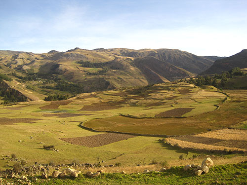

Michelle Young
Precious adornments: Long-distance exchange and the emergence of social complexity in the Andean highlands
In the Central Andes, the Early Horizon (c.900-200BC) marks a period of increasing social complexity and unprecedented interregional interaction, visible archaeologically through the widespread adoption of new technologies, shared stylistic elements, and religious imagery. A surge in the exchange of exotic materials suggests that exchange of these materials may have played a role in concurrent social transformations. Recent investigations at the Early Horizon period site of Atalla in the region of Huancavelica, Peru, aim to the clarify role in long-distance exchange networks in the development of these more complex social patterns.
The 2014 pilot season of the Proyecto de Investigación Arqueológica Atalla, directed by Yale PhD candidate Michelle Young, has revealed that the site of Atalla participated in the complex systems of procurement and exchange during the Early Horizon period. The team discovered a deposit of fine beads made of black, green and turquoise-colored stones. The beads were strung and placed underneath a structure as a dedicatory offering - a common practice in the prehistoric Andes. The presence of non-local stones suggests that long-distance exchange at Atalla may have been fueled by a desire to procure valuable exotic materials used in objects of adornment and display. Such goods may have been used to create and maintain social distinctions among the residents of Atalla. These beads offer an opportunity to answer questions about long-distance exchange, negotiation of status, symbolism, craft production and ritual practice in the prehistoric Andes.
